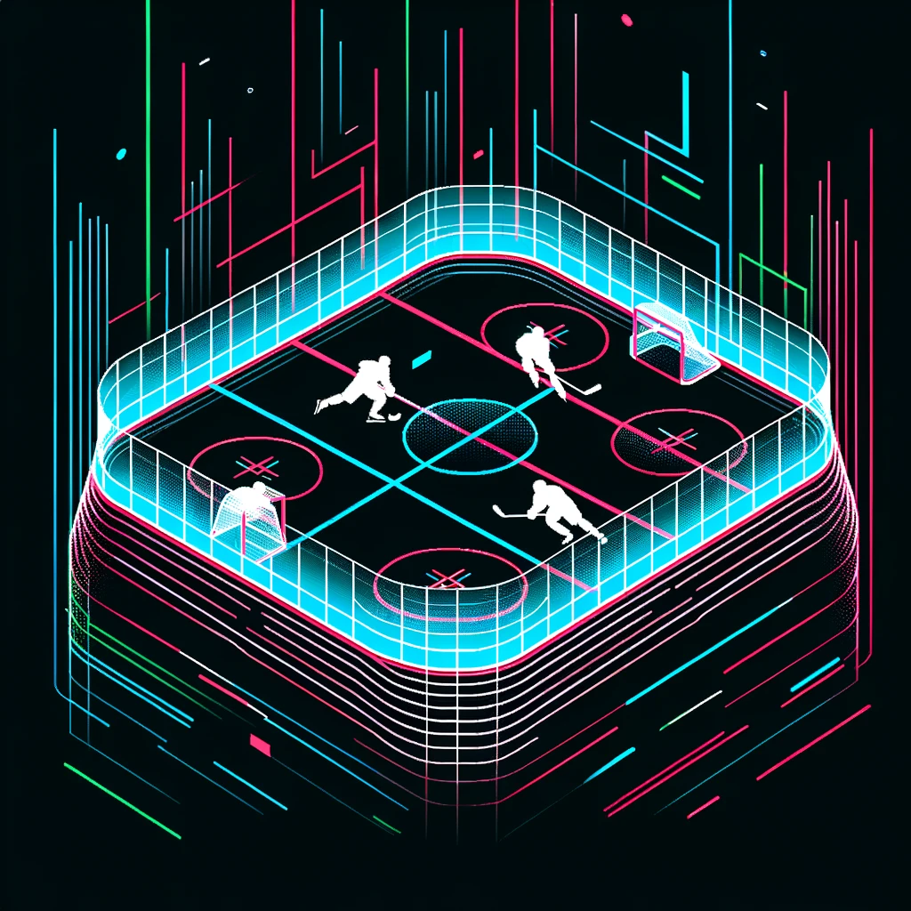

Women’s National Collegiate2026–27 season
The women’s game,
in the data.
Schedules, results, programs, and visual studies built on a dedicated women’s hockey record.

- Competition
- Women
- Season
- 2026–27
- Sources
- CHN / CHI
- Status
- Season in progress
Current season
Schedule & results.
Loading the current schedule…
First study
Team performance.
Compare scoring, shots, penalties, and special teams for women’s programs. Each metric reports the games with recorded totals; historical seasons may have scores without box totals.
Coverage
Separate record.
Shared standards.
Women’s games and programs are analyzed separately from the men’s archive.
Schedules are reconciled across College Hockey News and College Hockey Inc. Validated boxes supply additional metrics. Missing fields stay unknown, exhibitions are excluded from regular-season comparisons, and early-season samples remain provisional.